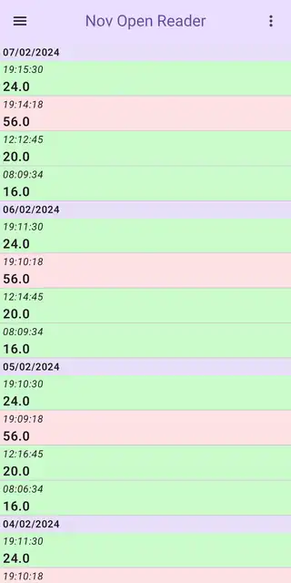

Nov Open Reader
صحة ورياضة
Nov Open Reader is a small application to read data from NFC insulin pens from Novo Nordisk : NovoPen 6 and NovoPen Echo Plus. Put the pen on the NFC reader of your phone to start retrieving its data, which will be simply displayed as a list. By default, doses within a one minute delay will be group
✓ ترخيص مفتوح (Apache-2.0) · آخر تحديث: 2025-12-18
1.3.1الإصدار
17.6 MBالحجم
Apache-2.0الرخصة
Open in Kanzتحميل APK (17.6 MB)
Download APK
SHA-256: b60fc1b48338a9f28932813835f38d7bd0afdfca373c5282d8e57482884f73e5

امسح الكود لفتح صفحة التطبيق
Scan to open this app page
لو كنز مش متثبت عندك: نزّل متجر كنز.
Not installed? Get the Kanz store.